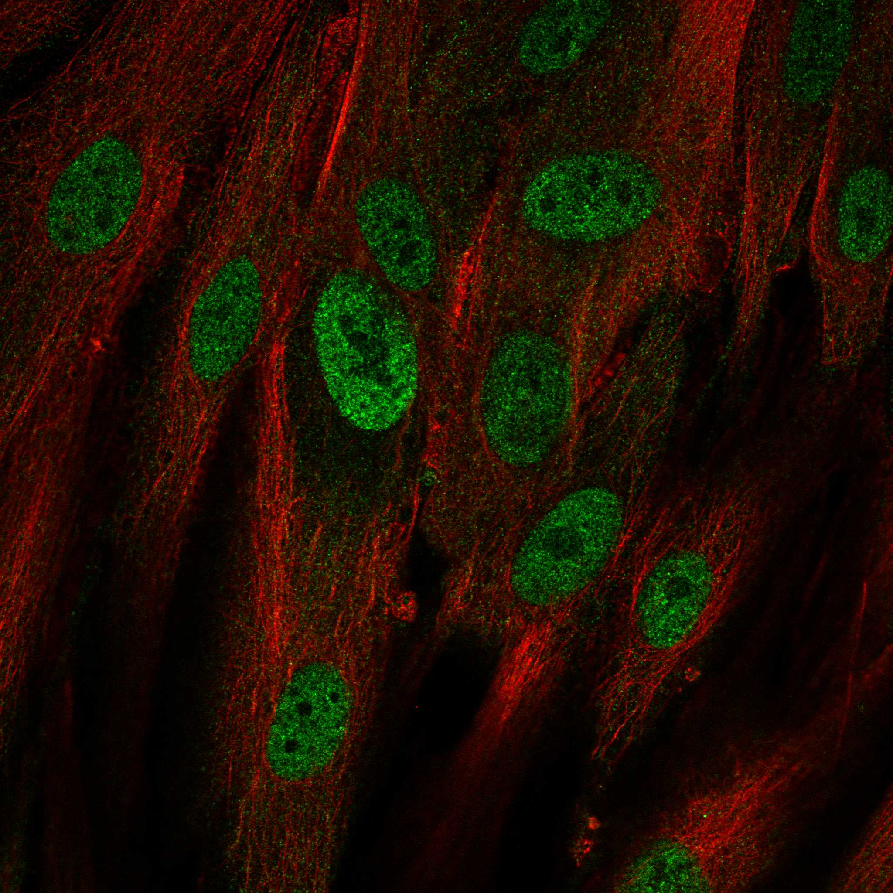

type: protein-evaluation gene: "NAP1L5" date: 2026-06-01 tags: [protein-scout, nucleoplasm, evaluation] status: scored ---
NAP1L5 核蛋白评估报告
1. 基本信息
| 项目 | 内容 |
|---|---|
| 基因名 / 别名 | NAP1L5 / DRLM |
| 蛋白全名 | Nucleosome assembly protein 1-like 5 |
| 蛋白大小 | 182 aa / 19.6 kDa |
| UniProt ID | Q96NT1 |
2. 评分总览
| 维度 | 得分 | 新权重 | 加权后 | 关键证据摘要 |
|---|---|---|---|---|
| 核定位特异性 | 5/10 | x4 | 20.0 | UniProt Nucleus (ECO:0000305); GO-CC nucleus (IEA); HPA Nucleoplasm (Approved) + Cytosol |
| 蛋白大小 | 9/10 | x1 | 9.0 | 182 aa, 19.6 kDa, 小型核小体组装蛋白 |
| 研究新颖性 | 8/10 | x5 | 40.0 | PubMed strict=24, broad=37 |
| 三维结构 | 3/10 | x3 | 9.0 | AlphaFold mean pLDDT 65.4; PDB 无; pct_gt_90=24.7% |
| 调控结构域 | 7/10 | x2 | 14.0 | NAP family (IPR037231, IPR002164); Pfam PF00956 (Nucleosome assembly protein); 直接染色质组装 |
| PPI 网络 | 5/10 | x3 | 15.0 | STRING: NAP1L1 0.793, NAP1L4 0.746, NOL6 0.736; IntAct 15 条; UniProt 4 条 |
| 加权总分 | 107/180** | |||
| 互证加分 | +1.0 | 印记基因; 核小体组装 | ||
| 归一化总分 (÷1.83) | 58.5/100** |
3. 详细分析
3.1 核定位证据
| 来源 | 定位 | 可信度 |
|---|---|---|
| UniProt | Nucleus (ECO:0000305) | 低置信度 (无实验证据引用的 curator 推断) |
| GO-CC | nucleus (IEA:UniProtKB-SubCell) | 电子注释 |
| Protein Atlas (IF) | Nucleoplasm (main, Approved) + Cytosol (additional) | HPA Approved |
| Protein name | Nucleosome assembly protein 1-like 5 | 名称暗示核功能 |
HPA IF 状态: HPA IF 图像已本地嵌入。

结论: NAP1L5 核定位证据主要依赖 HPA IF Approved (Nucleoplasm main)。UniProt 仅有低置信度推断 (ECO:0000305)，GO-CC 为电子注释。HPA Approved 提供了独立的实验定位支持。
3.2 结构与数据源
| 指标 | 数值 |
|---|---|
| AlphaFold | AF-Q96NT1-F1 (v6) |
| 平均 pLDDT | 65.4 |
| pLDDT >90 | 24.7% |
| pLDDT 70-90 | 7.1% |
| pLDDT 50-70 | 46.2% |
| pLDDT <50 | 22.0% |
| PDB | 无 |
| InterPro | IPR037231 (NAP-like superfamily), IPR002164 (NAP family) |
| Pfam | PF00956 (NAP) |
AlphaFold 置信度中等偏低 (mean 65.4)，大部分区域在 50-70% 区间，提示蛋白可能含固有无序区。无 PDB 实验结构。NAP domain 是核小体组装蛋白的保守结构域。
3.3 研究现状
| 指标 | 数值 |
|---|---|
| PubMed strict (Title/Abstract) | 24 |
| PubMed symbol only | 35 |
| PubMed broad | 37 |
| 别名 | DRLM（未用于 scoring） |
关键文献：
- PMID:36568274 (Wang B et al., 2022) -- NAP1L5 缓解阿尔茨海默病细胞模型病理特征
- PMID:40786510 (Wang M et al., 2025) -- NAP1L5 在急性髓系白血病中的预后生物标志物
- PMID:37717692 (Xiao B et al., 2023) -- NAP1L5 通过 TRIM29 介导的 PHLPP1 泛素化促进胰腺癌
- PMID:36374212 (Zhao R et al., 2022) -- NAP1L5 联合 MYH9 通过 PI3K/AKT/mTOR 抑制 HCC
- PMID:37667226 (Roh J et al., 2023) -- MALAT1 调控肺癌细胞基因表达谱（含 NAP1L5）
NAP1L5 是一个印记基因，研究集中在肿瘤生物学（胰腺癌、HCC、AML）和神经退行性疾病。核小体组装功能主要通过家族归属推断，直接生化证据有限。
3.4 PPI 网络（三源综合）
| Partner | Source | Score/Evidence | Relevance |
|---|---|---|---|
| NAP1L1 | STRING | 0.793 (exp 0.537) | NAP family |
| NAP1L4 | STRING | 0.746 (exp 0.508) | NAP family |
| NOL6 | STRING | 0.736 (exp 0.702) | Nucleolar |
| NAP1L2 | STRING | 0.673 (exp 0.593) | NAP family (imprinted) |
| TSPYL4 | STRING | 0.712 (exp 0.624) | Chromatin |
| ATF4 | IntAct | Y2H (PMID:32296183) | 转录因子 |
| NAP1L2 | IntAct | PCA (PMID:32296183) | NAP family, UniProt 5 exps |
| SYCE2 | IntAct | validated Y2H (PMID:32296183) | Synaptonemal complex, UniProt 5 exps |
| KAT5 | IntAct | Y2H (PMID:16169070) | 组蛋白乙酰转移酶 (Tip60) |
| GRB2 | IntAct | Y2H (PMID:20936779) | 信号适配器 |
| IKBKG | IntAct | protein array (PMID:20098747) | NF-kB 信号 |
| SNRPB2 | IntAct | Y2H (PMID:32296183) | 剪接体 |
| -- | UniProt | ATF4(3), NAP1L2(5), SNRPB2(3), SYCE2(5) | Curated |
PPI 网络以 NAP 家族同源互作为主，同时 KAT5 (Tip60 组蛋白乙酰转移酶) 的互作提示染色质修饰关联。UniProt 记录 4 个 curated interactors。
4. 总体评价
NAP1L5 是一个小型印记核小体组装蛋白，HPA IF Approved 支持核定位。NAP domain 直接参与染色质组装。研究热度低 (strict=24)，新颖性良好。不足之处：UniProt 定位证据薄弱（仅 ECO:0000305），结构数据中等偏下，NAP 家族染色质组装功能需实验验证。
5. 数据来源
- UniProt: https://www.uniprot.org/uniprotkb/Q96NT1
- AlphaFold: https://alphafold.ebi.ac.uk/entry/Q96NT1
- PubMed: https://pubmed.ncbi.nlm.nih.gov/?term=NAP1L5
- Protein Atlas: https://www.proteinatlas.org/ENSG00000177432-NAP1L5
PAE 图像说明: AlphaFold PAE 图像已重新获取并嵌入（见下方 PAE 图像修正块）；结构判断仍结合 pLDDT 与 PAE 综合判断。
<!-- AF_PAE_REPAIR_START --> PAE 图像修正（2026-06-05）: AlphaFold 提供 predicted aligned error 图像；此前“PAE 图像暂无数据”的表述为未获取/未嵌入导致。